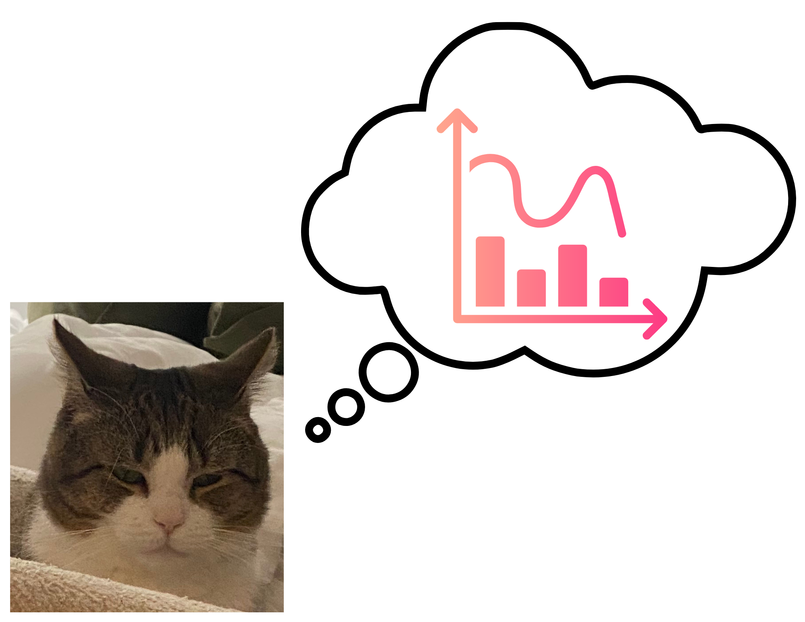
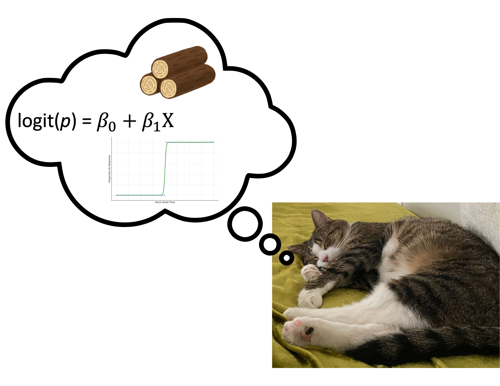
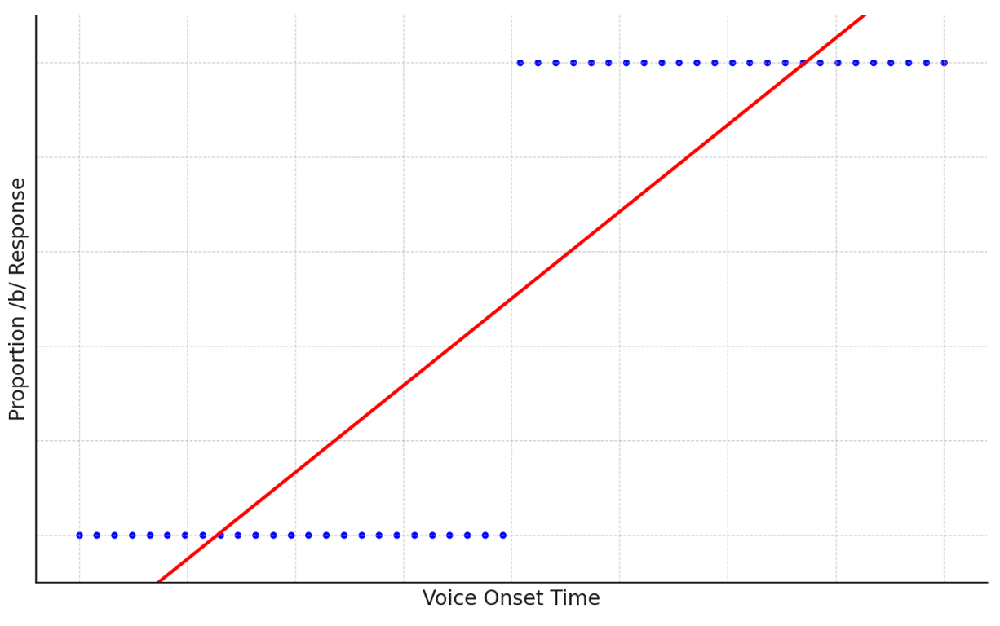
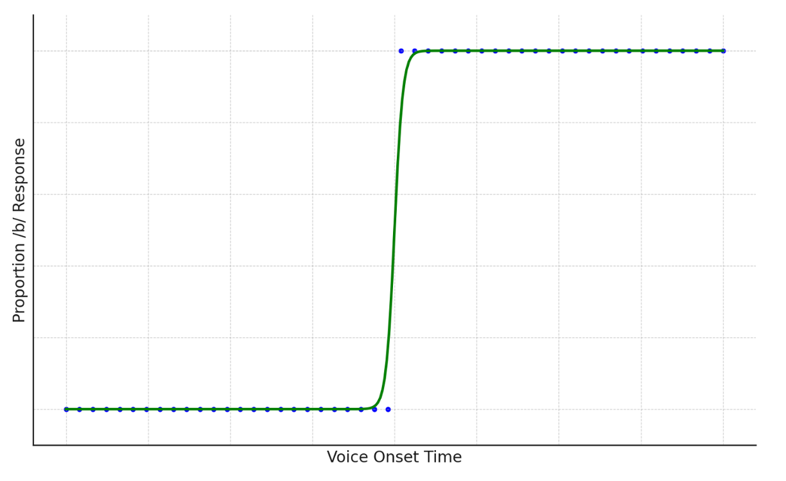

# load packages
library(lme4)
library(lmerTest)
library(tidyverse)
library(dplyr)
library(knitr)
library(broom.mixed)Introduction
Not sure about logistic regression? Do not fear! Read here!
You might be thinking “ugh” I hate statistics what is logistic regression anyways?

But I promise you it’s not only a very helpful method but it is quite simple to implement! By the end of this post you’ll be sleeping soundly knowing you mastered the logistic regression.

Why do we need logistic regression?
Okay let’s get started! Why do we even need logistic regression? When should you use it?
Sometimes linear regression isn’t the best fit for our data. This can be the case for a variety of reasons. One common case where this might happen is when our response variable is binary, or has two distinct levels. For instance if we have bi-modal data as in the image below, it is clear that although the linear model is capturing the fact that as our x variable increases, the y variable increases, it misses out on the real pattern of the data. A linear model assumes that as x increases, y increases at a fixed rate. In our data, however, it is clear that this is not the case. In fact, the y variable is constant until a certain threshold is reached by the x variable.

In contrast, if we fit a logistic model instead, you can see that it does a much better job of describing the data! As mentioned earlier, logistic regression is recommended for any binary data (and spoiler alert it is often extended to capture categorical data of many shapes and sizes). For our purposes, however, let’s stick with purely binary data. This could be yes/no responses, accuracy scored as 0 or 1, heads/tails, and the list goes on.

What even is logistic regression?
Now you’re probably thinking, okay great it seems like logistic regression is helpful for categorical variables but what is it? The equation is similar to a linear model but instead of predicting the y value, we are predicting the “log odds.” The log odds is the logarithm of the odds of an event happening where \(p\) is the probability of the event happening and 1-\(p\) is the probability that the event won’t happen.
\[\begin{equation*} \log\left(\frac{p}{1 - p}\right)=b_0+b_1X \end{equation*}\]
If we take a yes/no example we can think of \(p\) as being the probability that the response will be a yes and 1-\(p\) as the probability that the response will be a no.
How can I implement logistic regression in my work?
Implementing logistic regression is a simple, easy extension of linear regression. First load the packages that you will need.
Let’s use an example data set: iris. This data set includes information about three species of irises including their sepal length and width and their petal length and width. If we look at just two of the species, this provides a great example of a binary variable. Let’s see if we can build a logistic regression to predict species by sepal length. First load and format the data.
# load data
data <- as.data.frame(iris)
# format data
data <- data %>%
filter(Species != "virginica") %>% # get rid of virignica so we only have 2
mutate(Species= # make species numeric
case_when(
Species == "versicolor" ~ 1,
Species == "setosa" ~ 0))Now we are ready to perform our logistic regression. The format is the same as a linear model except we will include an additional argument “family = binomial” to indicate that the data is binary. Note: if you want to run a mixed effects model you would use the function glmer instead.
log <- glm(Species ~ Sepal.Length, family = binomial, data = data)
log %>%
tidy(conf.int = TRUE) %>%
kable()| term | estimate | std.error | statistic | p.value | conf.low | conf.high |
|---|---|---|---|---|---|---|
| (Intercept) | -27.831451 | 5.433594 | -5.122107 | 3e-07 | -40.126184 | -18.553199 |
| Sepal.Length | 5.140336 | 1.006560 | 5.106834 | 3e-07 | 3.421613 | 7.415508 |
Great! As you can see in the output above, sepal length significantly, positively predicts species (\(p\) < .001). However, interpretation of the \(b\) values is slightly different from linear regression. Now let’s think back to our logistic regression formula. Remember the left side of the equation is what we call the log odds so the intercept in this case is the log odds when X is equal to 0 (when the sepal length is 0). In our case this is nonsensical but in other scenarios it might make sense where a 0 value is interpretable. This would give you the baseline log odds. Now to interpret \(b1\), this is the change in the log odds of the y variable going from 0 to 1 for a one unit increase in X. For our case, this means for a one cm increase in sepal length, the log odds of the species being versicolor increases by 5.14.
But what are log odds anyways? You might be thinking okay great but that is all a bunch of jargon to me. There’s a few things we can do to make it more interpretable.
Odds ratio
The first thing we can do is get the odds ratio instead of the log odds. Recall, the odds ratio is just the part within the log() of our logistic regression formula: \[\begin{equation*} \left(\frac{p}{1 - p}\right) \end{equation*}\]
Which is defined as the probability that an event will happen \(p\) over the probability that an event won’t happen (1 - \(p\)). So to get the odds ratio, all we have to do is exponentiate our result. Then, we know that if the result is greater than 1, the event is more likely to occur (in our case more likely to be versicolor) and if the result is less than 1, the event is less likely to occur (more likely to be setosa). This can be done simply as shown below.
tidy(log, exponentiate = TRUE, conf.int = TRUE) %>%
kable()| term | estimate | std.error | statistic | p.value | conf.low | conf.high |
|---|---|---|---|---|---|---|
| (Intercept) | 0.0000 | 5.433594 | -5.122107 | 3e-07 | 0.00000 | 0.000 |
| Sepal.Length | 170.7732 | 1.006560 | 5.106834 | 3e-07 | 30.61878 | 1661.554 |
Now looking at our coefficients, we can see that the odds ratio is greater than 1 showing that as sepal length increases, the species is more likely to be versicolor. More specifically, the odds of the species being versicolor is 171 times the odds of the species being setosa for a 1 cm increase in sepal length. We can also convert this to a percentage as shown below.
# convert to percentage
(171-1) * 100[1] 17000Wow! The odds of the species being versicolor is 17000% higher than setosa for a 1 cm increase in sepal length.
Probability
We can even get a probability of the event happening or not happening for a specific X value (in our case the probability of the species being versicolor for a specific sepal length. Luckily a simple function in r can do this for us. All we need to do is use the plogis function in plug in the following information: plogis(\(b0\) + \(b1\)*sepal.length). In our case, let’s predict the probability for a sepal length of 4.6 cm.
# convert to probability
plogis(-27.83 + (5.14)*4.6)[1] 0.0149792The probability of an iris being versicolor with a sepal length of 4.6 cm is very low at about 1.5%. This makes sense because if we look at our original data, irises with sepal lengths of 4.6 cm were always categorized as setosa.
Conclusion
Now you’ve learned the basics of logisitic regression! It really is very simple to implement and has extensions in all sorts of other areas of statistics. Just remember, when you are dealing with binary data, always use logistic!